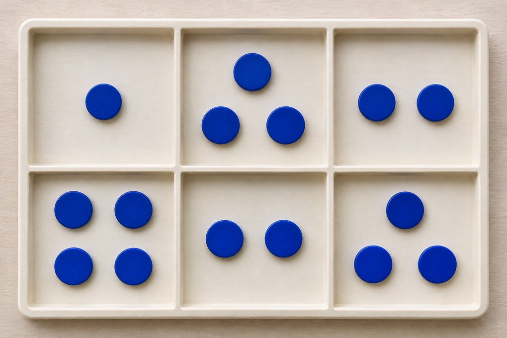

С чего начать
NumPy выполняет операции над числовыми массивами. Это основа представления таблицы признаков и расчётов в машинном обучении.
Как думать о массиве
Представьте таблицу со строками по дням и столбцами по товарам. У каждой ячейки два адреса: сначала номер строки, затем номер столбца. NumPy начинает счёт с нуля. Запись A[1, 0] читает значение второго дня для первого товара.
Перед каждым расчётом спросите себя, сколько чисел должно остаться в ответе. Если нужен один итог на день, после сложения должно остаться столько чисел, сколько строк. Если ожидаете итоги по товарам, длина результата должна совпасть с числом столбцов. Мысленная проверка формы ловит ошибки, даже когда программа спокойно выполняется.
- shape
- Размер каждой оси. Форма (2, 3) означает две строки по три значения.
- dtype
- Правила представления элементов массива, например целые или дробные числа.
- Маска
- Массив логических значений. True отмечает позиции, прошедшие проверку.
В Colab подключите обычную среду Python и выполните import numpy as np. Если запускаете Jupyter локально и NumPy отсутствует, выполните %pip install numpy в отдельной ячейке этого блокнота.
Читаем фрагмент книги
Когда два массива видят одни и те же данные
Операция среза создаёт представление исходного массива. Это способ обратиться к данным самого массива.
Оригинал и перевод этого отрывка · Scientific Python developers · Scientific Python Lectures · CC BY 4.0
Прочитать английский оригинал
A slicing operation creates a view on the original array, which is just a way of accessing array data.
Как это проверить
Возьмите a = np.array([7, 8, 9]) и b = a[1:]. Если присвоить b[0] = 50, то a станет [7, 50, 9]. Начало b совпадает с позицией 1 в исходных данных. Теперь повторите опыт с b = a[1:].copy(): у копии своя память, поэтому замена в b не затронет a.
Как по форме массива отличить итог по смене от итога по товару?
В киоске два товара, и выручку записывают за три смены. Составьте массив из строк [100, 300], [200, 200], [500, 100]. Строка обозначает смену, столбец обозначает товар. Форма (3, 2) проверяет договорённость до вычислений. На наклейке рядом с кодом полезно сохранить и порядок товаров, поскольку у обычного массива нет именованных столбцов.
При вызове sum(axis=0) схлопываются три строки. Остаются два значения, 800 и 600 тенге, по одному на товар. При sum(axis=1) складываются два значения внутри каждой смены. Получается 400, 400 и 600 тенге. В обоих случаях общий итог равен 1400. Проверка только общей суммы пропустит перепутанную ось, поэтому дополнительно проверьте форму результата и один элемент вручную.
А теперь вычислите скидочную выручку, умножив массив на [0.9, 1]. NumPy сопоставляет вектор с последней осью и применяет скидку только к первому товару во всех трёх сменах. Имена товаров в этом вычислении не участвуют. Если исходный файл поменял порядок столбцов, код выполнится, но скидку получит другой товар.
Какой должна стать выручка третьей смены и общий итог после скидки?
Сверить ответ
В третьей смене получится 500 × 0,9 + 100 = 550 тенге. Общий итог равен 800 × 0,9 + 600 = 1320.
Подробный разбор
- Как правка фрагмента массива меняет исходные измерения
- Как прибавить разную поправку к каждому прибору
- Как прочитать axis, если у таблицы три измерения
Как правка фрагмента массива меняет исходные измерения
Вы записали шесть показаний уровня воды: 12, 15, 18, 21, 24 и 27 сантиметров. В отдельных переменных хотите хранить исходную серию и три средних показания для проверки. После raw = np.array([12, 15, 18, 21, 24, 27]) выражение trial = raw[1:4] выбирает значения 15, 18 и 21. Обычный срез одномерного массива NumPy в этом случае создаёт представление. Доступ к выбранным значениям идёт через общую область памяти.
Теперь вы временно исправляете подозрительное измерение командой trial[1] = 99. Индекс 1 внутри фрагмента соответствует индексу 2 в raw. Число 18 сменится на 99 в обоих представлениях. Если после такого опыта сравнить исходные измерения с исправленными, различие исчезнет из сравнения. Сохраните отдельный экспериментальный вариант выражением trial = raw[1:4].copy() до внесения правок. Теперь запись в trial меняет только копию.
Чтобы проверить понимание, выпишите соответствие индексов в двух столбцах. Затем попробуйте самостоятельно проследить изменение на последней позиции среза. В реальном анализе копия особенно удобна, когда надо сравнить несколько способов исправления одной и той же серии. Храните первоначальные измерения в отдельной переменной и проверяйте, что они переживают каждый опыт в исходном виде.
| Индекс в trial | Индекс в raw | До правки |
|---|---|---|
| 0 | 1 | 15 |
| 1 | 2 | 18 |
| 2 | 3 | 21 |
Берём новый исходный массив. Если part = raw[1:4].copy() и part[2] = 0, какими станут part и raw[3]?
Разобрать ответ
part содержит [15, 18, 0]. В raw[3] останется 21, потому что на этот раз значения скопированы.
Как прибавить разную поправку к каждому прибору
Три прибора измеряют длину образца утром и вечером. Запишите результат в виде двух строк: утром [20, 30, 40], вечером [22, 27, 45]. В столбцах строго один порядок приборов. После проверки оказалось, что первому нужно прибавлять один миллиметр, второму вычитать два, третьему прибавлять три. Запишите поправки вектором [1, -2, 3]. Перед вычислением убедитесь, что каждая позиция вектора относится к соответствующему столбцу таблицы.
Массив readings имеет форму (2, 3), а offsets имеет форму (3,). NumPy сопоставляет размеры начиная с правого края. Размер 3 совпадает, поэтому к каждой строке прикладывается тот же вектор поправок. Результатом readings + offsets будут строки [21, 28, 43] и [23, 25, 48]. Вручную сверьте нижний средний элемент: во второй строке было 27, ко второму прибору относится −2, стало 25. Это осмысленная проверка соответствия индексов.
Теперь вообразите другую задачу. Утренняя серия целиком требует сдвига +5, а вечерняя −1. Вектор из двух чисел с формой (2,) нельзя напрямую прибавить к (2, 3), поскольку крайние размеры 2 и 3 несовместимы. Придайте поправкам форму (2, 1). Тогда каждому времени будет соответствовать одна строка с одним значением, которое можно прибавить ко всем трём измерениям этой строки.
Каким станет результат утренней и вечерней серии, если к исходному массиву прибавить np.array([[5], [-1]])?
Разобрать ответ
Утром получится [25, 35, 45], вечером [21, 26, 44]. Добавление следует времени измерения.
Как прочитать axis, если у таблицы три измерения
На складе корзины собирают утром и вечером на двух участках. Записываем количество собранных корзин за три дня. Массив counts имеет форму (2, 3, 2). Первая позиция выбирает участок, вторая день, третья смену. Для участка А пары за три дня равны [2, 4], [3, 5], [1, 3]. Для участка Б они равны [1, 2], [5, 0], [2, 4]. Объясните эти позиции словами до первого обращения к sum.
Чтобы получить итоги каждого участка за каждый день, нужно сложить утро и вечер. Именно смена исчезает из ответа, поэтому выбираем axis=2. В результате остаются два участка и три дня. Строка А будет [6, 8, 4], строка Б будет [3, 5, 6]. Если заказчик спросит общую занятость утром и вечером по дням для всего склада, потребуется убрать ось участка. При axis=0 в первой дневной строке получится [3, 6].
Сложите шесть дневных итогов из первой версии отчёта. Получается 32 корзины. Если вместо этого сложить все значения отчёта по сменам, должен получиться тот же итог. Такая сверка помогает отловить потерю наблюдений. Однако равенство общих сумм ещё не гарантирует правильную подпись осей. Для проверки смысла выберите конкретную ячейку и перечислите исходные значения, из которых она сложилась.
| День | Участок А, обе смены | Участок Б, обе смены |
|---|---|---|
| 1 | 2 + 4 = 6 | 1 + 2 = 3 |
| 2 | 3 + 5 = 8 | 5 + 0 = 5 |
| 3 | 1 + 3 = 4 | 2 + 4 = 6 |
Хотим по каждой смене каждого участка посчитать объём за все три дня. Какую ось убрать и какой итог получится?
Разобрать ответ
Убираем дни через sum(axis=1), форма ответа (2, 2). Для участка А получится [6, 12], для Б — [8, 6].
Код по шагам
Перед запуском прочитайте пример и запишите, что появится на экране. Затем откройте вывод под кодом и сравните со своим ответом.
Как прибавить одну величину ко всем измерениям?
Датчик занижает каждую температуру на два градуса. Превратим три измерения в числовой массив и применим одинаковую поправку ко всем позициям.
import numpy as np
readings = np.array([16, 18, 21])
corrected = readings + 2
print(corrected.tolist())
print(readings.tolist())Показать вывод и объяснение
[18, 20, 23] [16, 18, 21]
Имя np служит коротким обозначением библиотеки NumPy. При сложении массива с числом оно прибавляется к каждому элементу, и corrected получает новый массив. Вызов tolist переводит данные в обычный список для вывода, а вторая строка результата подтверждает сохранность исходных измерений.
Как отобрать только значения выше порога?
Диспетчер отслеживает часы, когда очередь длиннее пяти человек. Сначала построим отдельный ответ да или нет для каждого наблюдения, затем отберём подходящие длины.
import numpy as np
queues = np.array([5, 8, 3, 7])
mask = queues > 5
print(mask.tolist())
print(queues[mask].tolist())Показать вывод и объяснение
[False, True, False, True] [8, 7]
Сравнение применяется ко всем четырём позициям в исходном порядке. В выражении queues[mask] каждая отметка True оставляет соответствующее значение в результате. Ровно пять человек исключаются, поскольку в условии использована строгая граница >.
Как получить итог за день и за товар?
В таблице продаж каждая строка соответствует дню, каждый столбец — товару. Запишем продажи за два дня и проверим руками, что два способа сложения отвечают на разные вопросы.
import numpy as np
sales = np.array([[2, 4, 1], [3, 0, 6]])
print(sales.shape)
print(sales.sum(axis=1).tolist())
print(sales.sum(axis=0).tolist())Показать вывод и объяснение
(2, 3) [7, 9] [5, 4, 7]
Форма (2, 3) говорит о двух строках и трёх столбцах. При axis=1 исчезает ось столбцов, поэтому первая сумма равна 2 + 4 + 1 и остаётся одно число на день. При axis=0 складываются дни внутри каждого столбца, поэтому для первого товара получаем 2 + 3.
Как посчитать фишки по рядам и столбцам?

Запишите A = np.array([[1, 3, 2], [4, 2, 3]]). Пока ось не выбрана, попробуйте сами получить два итога по рядам и три по столбцам.
Лаборатория · Какие фасовочные линии выходят за допуск?
На фабрике три линии наполняют пакеты разного размера. Вам передали четыре раунда контрольного взвешивания. Вычислите отклонения от нормы, найдите нарушения и покажите, на какой линии проверку нужно повторить первой.
Строка матрицы — один раунд, столбец — одна линия. Цели по линиям равны 250, 500 и 1000 г. Допустимые отклонения в любую сторону составляют соответственно 3, 5 и 8 г. Точное попадание на границу считается нормой.
Шаг 1. Сколько граммов прибавила или недоложила каждая линия?
import numpy as np
mass = np.array([[250, 496, 1010],
[247, 507, 1001],
[254, 500, 989],
[249, 505, 1008]])
target = np.array([250, 500, 1000])
tolerance = np.array([3, 5, 8])
delta = mass - target
print(delta.shape)
print(delta.tolist())Проверить результат
(4, 3) [[0, -4, 10], [-3, 7, 1], [4, 0, -11], [-1, 5, 8]]
Вектор target содержит одну норму на столбец. При вычитании NumPy применяет одни и те же три нормы к каждой строке. Например, третий пакет первой линии весит 254 г, значит отклонение равно +4 г. Знак сохраняет направление отклонения.
Шаг 2. Какие измерения нарушают двусторонний допуск?
outside = np.abs(delta) > tolerance
print(outside.astype(int).tolist())
print("Нарушений:", outside.sum())Проверить результат
[[0, 0, 1], [0, 1, 0], [1, 0, 1], [0, 0, 0]] Нарушений: 4
Абсолютное значение позволяет одинаково учитывать недовес и перевес. В выводе единица означает нарушение. В последней строке отклонения +5 и +8 г равны своим допускам, поэтому остаются в допустимом диапазоне.
Шаг 3. Какая линия нарушала допуск чаще других и в каком раунде больше всего нарушений?
by_line = outside.sum(axis=0)
by_round = outside.sum(axis=1)
print("По линиям:", by_line.tolist())
print("По раундам:", by_round.tolist())
print("Линия для проверки:", int(by_line.argmax()) + 1)Проверить результат
По линиям: [1, 1, 2] По раундам: [1, 1, 2, 0] Линия для проверки: 3
Сумма по оси 0 убирает раунды и оставляет три результата по линиям. У третьей линии два выхода за допуск из четырёх взвешиваний, а третий раунд содержит два нарушения. argmax выдаёт индекс 2. В заводской нумерации это линия 3.
Программа выполняется. Где ошибка в выводе?
import numpy as np
faulty_delta = np.array([[0, -4, 10], [-3, 7, 1],
[4, 0, -11], [-1, 5, 8]])
limit = np.array([3, 5, 8])
print((faulty_delta > limit).sum(axis=0).tolist())Разобрать ошибку
[1, 1, 1]
Сравнение со знаком обнаружило перевес, но пропустило −11 г на третьей линии. Этот пакет вышел за нижнюю границу 992 г и тоже требует внимания. Примените абсолютное значение перед сравнением или явно проверьте обе границы.
Начальник смены меняет допуск только для третьей линии с 8 до 10 г. Сохраняйте сами взвешивания. Предскажите, какие нарушения исчезнут, затем повторите расчёт.
Сверить свой результат
Перевес +10 г в первом раунде станет допустимым, недовес −11 г в третьем раунде останется нарушением. По линиям получится [1, 1, 1], по раундам [0, 1, 2, 0], всего три нарушения. Теперь все линии имеют одинаковое число выходов за допуск. При таком равенстве argmax вернёт индекс первого максимума, и программа напечатает линию 1. Для выбора между тремя линиями понадобится дополнительный критерий.
Практика и домашнее задание
Пример из блокнота
A = [[1,2,3],[4,5,6]], shape=(2,3)
mean(axis=0) даёт [2.5,3.5,4.5]
mean(axis=1) даёт [2,5], A+[10,20,30] прибавляет значения к столбцам
import numpy as np
A = np.array([[1, 2, 3], [4, 5, 6]])
print(A.shape, A.dtype)
print(A.mean(axis=0))
print(A.mean(axis=1))
print(A + np.array([10, 20, 30]))
B = A[:, :2].copy()
B[0, 0] = 99
assert A[0, 0] == 1axis=0 сворачивает строки и оставляет результат по столбцам. Умножение * поэлементное, @ матричное. Broadcasting экономит запись, но ошибочная форма может незаметно создать гораздо больший массив.
Работа на занятии
- Для A=[[2,4],[6,8]] найти среднее по столбцам и строкам.
- Умножить каждый столбец A на [10,100] без Python-цикла.
Домашнее задание
- Создать массив продаж 7×3 и посчитать итоги по дням и товарам.
- Найти дни с выручкой выше средней с помощью логической маски.
- Нормировать каждый столбец: вычесть среднее и разделить на std. Обработать нулевую std.
Сохраните блокнот с выполненными ячейками, проверочными примерами и коротким выводом своими словами.
Для дополнительной тренировки
Если основной пример уже получился, откройте ещё один набор задач по той же теме.
Практикум · Самостоятельная работаДомашняя работа · 100 упражнений NumPy
Решите упражнения № 1–100 в ученической тетради. В начале вы создадите вектор и измените один элемент. К концу практикума сможете оценить, насколько меняется среднее при повторной выборке из тех же данных.
- Откройте тетрадь в Colab и сохраните копию на своём Google Диске. В Jupyter можно работать со скачанным файлом.
- Под каждым номером запишите своё решение. Если задача спрашивает, что выведет выражение, сначала запишите прогноз, затем выполните код и объясните расхождение. Для массивов проверяйте форму и несколько значений.
- Перед сдачей перезапустите среду и выполните все ячейки по порядку. Сдайте один заполненный файл
.ipynbили ссылку на свою копию с доступом преподавателю на просмотр.
Оригинальный практикум на GitHub · Русская редакция Александра Соколова.
Самопроверка
Что означает shape=(7,3)?
7 строк и 3 столбца.
Что вычисляет A*B?
Поэлементное произведение.
Чем view отличается от copy?
View разделяет данные с исходным массивом, copy хранит независимую копию.
Где легко ошибиться
- Смешение axis=0 и axis=1 меняет смысл результата
- Срез изменяет исходный массив: применять copy() при независимом редактировании
- Формы (n,) и (n,1) при сложении могут дать (n,n)
Что почитать
- Python for Data Analysis · 3-е издание · Глава 4 · Массивы и векторные вычисленияУ массива цен две строки и три столбца. Какой длины будет результат sum(axis=0)? Как выбрать ось, если требуется отдельный итог для каждой строки?
- Python Data Science Handbook · 2.1 · Типы данных массиваКакой тип NumPy подберёт для np.array([2, 3.5])? Сможете ли вы сохранить дробную часть при явном преобразовании всего массива в целые?
- Python Data Science Handbook · 2.2 · Индексы, срезы и формаУ массива из двух строк и трёх столбцов нужно выбрать второй столбец целиком. Что означают обе позиции в записи a[:, 1]?
- Python Data Science Handbook · 2.3 · Поэлементные операцииКакой результат даст np.array([2, 5]) * 2 и какой даст [2, 5] * 2? Объясните разницу в длине результатов.
- Python Data Science Handbook · 2.4 · Итоги по осямПусть строки содержат [1, 3, 2] и [4, 2, 3]. В какой записи получится [6, 9], а в какой — [5, 5, 5]?
- Python Data Science Handbook · 2.5 · Совмещение формКакие числа прибавятся к строке [4, 5, 6], если ко всей матрице формы (2, 3) добавить вектор [10, 20, 30]?
- Python Data Science Handbook · 2.6 · Маски и сравненияВ массиве [-2, 0, 3, 7] сохраните значения строго больше нуля. Сколько элементов в булевой маске и сколько в результате отбора?
- From Python to NumPy · Введение · От цикла к массивуДва списка по три числа нужно сложить попарно. Что сделает обычный оператор + со списками и что тот же оператор сделает после превращения обоих списков в массивы?
- From Python to NumPy · Устройство массива · Размещение в памятиМассив формы (2, 3) хранит целые числа int32. Сколько байт составляют сами значения? Сверьте расчёт со свойствами itemsize и nbytes.
- From Python to NumPy · Устройство массива · Представления и копииУ вас есть a = np.array([5, 6, 7]) и b = a[1:]. После присваивания b[0] = 9 что окажется в a? Где вызвать copy(), чтобы сохранить исходные числа?
- From Python to NumPy · Векторизация кодаДля массива температур получите маску значений выше 20 одной операцией. Как проверить её на списке из трёх значений, в котором одно равно 20?
- From Python to NumPy · Справочник · Создание, индексация и формаМожно ли без добавления или удаления значений изменить форму массива из шести элементов на (2, 3)? А на (2, 4)? Сформулируйте общее правило.
Документация
Вся книжная полкаСсылки от преподавателя
- Умножение матриц · видеоПосле урока NumPy сравните поэлементное A * B и матричное A @ B. Для второй операции одна строка умножается на один столбец с последующим сложением.
- Шелдон Экслер · Linear Algebra Done RightОткрытое четвёртое издание, PDF на английском. Попробуйте записать пару координат и объяснить сложение векторов на плоскости.
- Гилберт Стрэнг · Introduction to Linear AlgebraАвторская страница шестого издания с оглавлением и главами для знакомства. Посмотрите на матрицу через её столбцы.
- С. А. Логвенков, В. С. Самовол · Линейная алгебраРусскоязычное пособие с задачами, PDF на сайте ВШЭ. Вычислите произведение небольших матриц на бумаге и проверьте ответ в NumPy.
- Джейк Вандер Плас · Python для сложных задачСтраница русского издания у издателя. Английские главы о массивах и масках открыты на сайте автора и собраны в книжной полке курса.